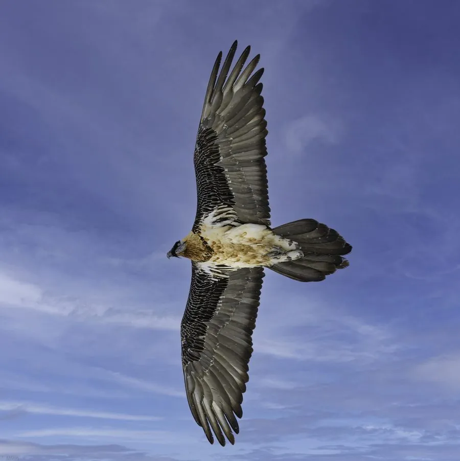

鸟类 · 动物界
胡兀鹫 Gypaetus barbatus

以骨头为主食的大型猛禽，嘴下长着一撮黑色胡须，会把大骨头从高空摔碎再吞下，被称为“骨骼清道夫”。
- 分类
- 门脊索动物门纲鸟纲目鹰形目科鹰科属胡兀鹫属
- 栖息环境
- 高山、高原的悬崖峡谷和开阔山地，常在雪线附近活动
- 地理分布
- 欧洲南部、非洲、中东和中亚的高山，中国青藏高原、新疆和内蒙古有分布
- 保护级别
- IUCN 近危（NT）；中国国家一级保护动物
物种志
胡兀鹫体长 94–125 cm，体重 4.5–7.1 kg，翼展 231–285 cm，是体形巨大的猛禽。它的头部和颈部呈淡黄白色，嘴下长着一撮黑色刚毛状的胡须，眼睛周围有一圈红色眼圈；身体羽色从黑灰到橙锈色不等，胸腹部的橙色来自泥浴中的铁氧化物。尾巴呈楔形，飞行时翅膀宽大。
胡兀鹫分布于欧洲南部、非洲、中东和中亚的高山地带，中国青藏高原、新疆和内蒙古有分布记录。它是少数以骨头为主食的鸟类，会从高空把大骨头摔在岩石上摔碎，再吞下碎片，也吃腐肉和乌龟。繁殖期在悬崖洞穴中营巢，每窝产卵 1–2 枚，孵化约 53–58 天，育雏期长达数月。由于铅中毒、兽药污染和人类干扰，全球种群数量有限，中国将其列为国家一级保护动物。
形态与习性
- 食性骨头为主，也吃腐肉、乌龟和小型动物
- 体长94–125 cm
- 体重4.5–7.1 kg
- 翼展231–285 cm
- 繁殖每窝 1–2 枚卵，孵化约 53–58 天
- 寿命野外约 30 年
- 习性把大骨头从高空摔碎，再吞下骨片
趣味知识
- 胡兀鹫是少数以骨头为主食的鸟类，能把骨头整块吞下或摔碎后吞食。
- 它会把大骨头从数十米高空摔在岩石上，反复多次直到骨头碎裂。
- 胡兀鹫嘴下的黑色刚毛像一撮胡须，是它名字的由来。
- 胡兀鹫的胸腹部常呈橙锈色，这是泥浴时接触铁氧化物染上的颜色。